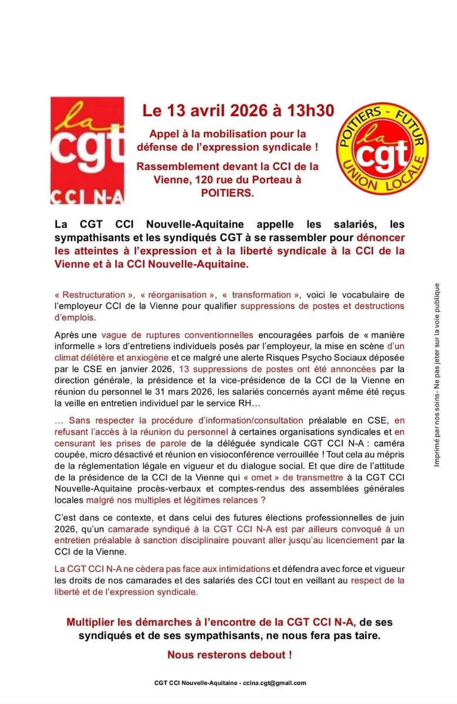

Publication sur X
À Poitiers, nous relayons l’appel de la CGT de la Vienne
Date de publication sur X · 10 avril 2026
Repères éditoriaux
Face aux suppressions de postes dénoncées par le syndicat, nous avons relayé son appel au rassemblement et ses revendications.
Texte de la publication sur X
La CGT de la Vienne dit non !
13 postes supprimés. Une alerte RPS ignorée. Une déléguée CGT censurée en pleine réunion : caméra coupée, micro désactivé, visio verrouillée. Les PV d’AG jamais transmis. Et un syndiqué convoqué en disciplinaire à trois mois des élections pro. https://t.co/YM9OjMEaJb

Sources
PCF 79 · @79Parti sur X · AR-0005-TW-2042533024860954887
À lire aussi · Le 23 avril à Niort, une nouvelle mobilisation contre la réforme de l’assurance chômage
Publications associées
- 13 avril à Poitiers. Soutien au rassemblement de la CGT · Réponse dans le même fil